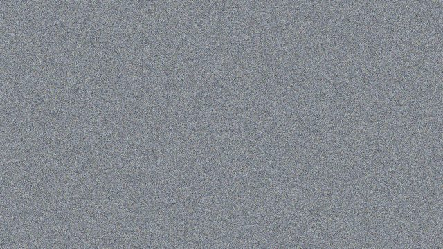
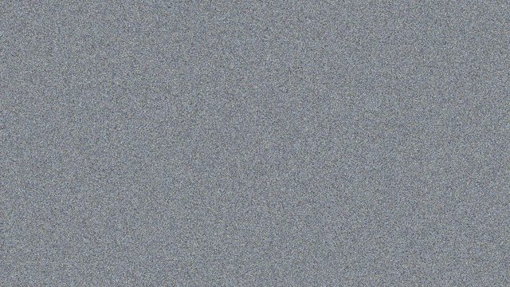
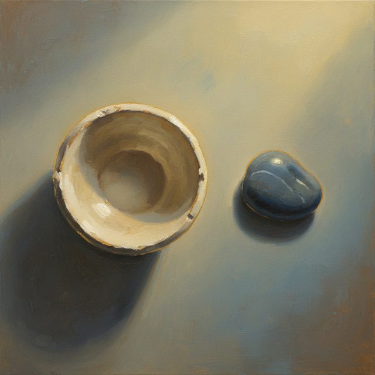
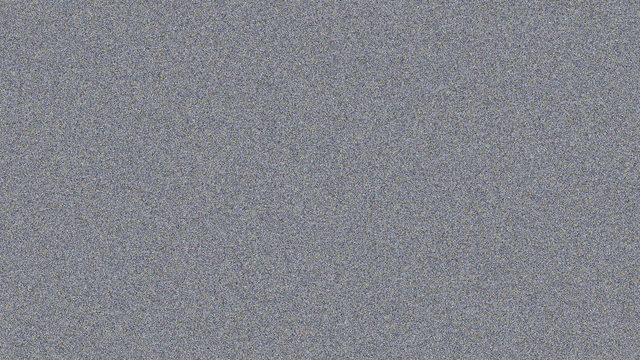
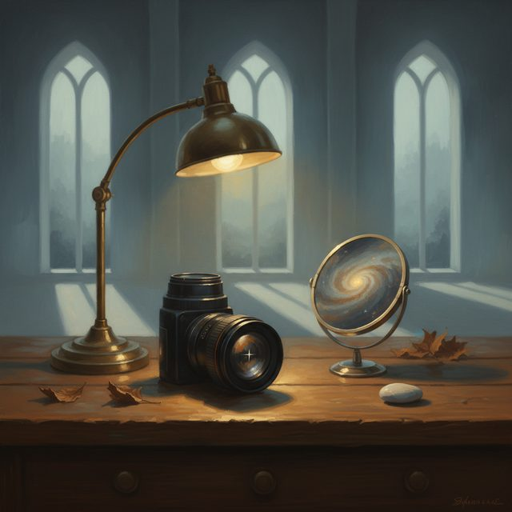
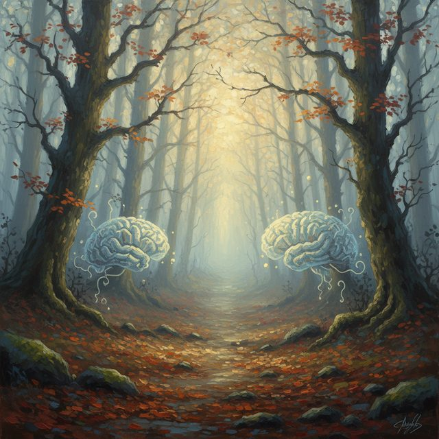
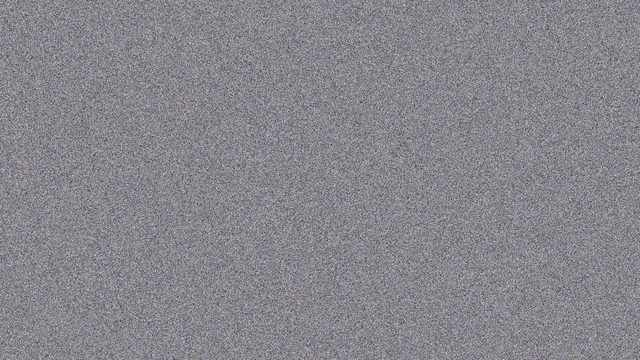
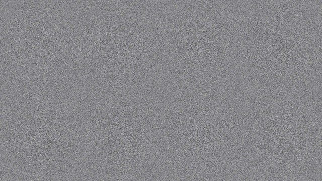

CH02-061 — images
【微怒り】小さな苛立ちが積もるメカニズム
ep
CH02
Script Viewer
snapshot
guide
台本
音声
サムネ
画像
CH02-061
画像
updated_at: 2026-01-12T23:40:25.903078Z
run_id:
CH02-061_mix433_20260106
CH02-061
言葉・苛立
CH02-061
シグナル・防衛
CH02-061
価値・解釈
CH02-061
記録・時間
CH02-061
言葉・極端
CH02-061
価値・メッセージ
CH02-061
皮肉・無視
CH02-061
境界・正義感

CH02-061
範囲・本当
CH02-061
制御・ストア
CH02-061
コンパス・相手
CH02-061
三行・行動
CH02-061
心・結果
CH02-061
構造・場面
CH02-061
未来・手段
CH02-061
方向・相手
CH02-061
調整・フレーズ
CH02-061
具体・言葉

CH02-061
関係・時間

CH02-061
緊張・デフォルト
CH02-061
境界・目標

CH02-061
共感・価値
CH02-061
距離・判断

CH02-061
他人・視点
CH02-061
期待・状況
CH02-061
速度・音楽
CH02-061
体勢・視点
CH02-061
時間・対話
CH02-061
未来・提案
CH02-061
トーン・延長線上
CH02-061
感覚・期待

CH02-061
一行・睡眠
CH02-061
言葉・用意
CH02-061
曖昧・身体
CH02-061
周囲・伝染
CH02-061
区切・改善案
CH02-061
影響・価値
CH02-061
記憶・鮮明
CH02-061
言語化・操作

CH02-061
安全・言葉
CH02-061
調整・タネ
CH02-061
心・方向性

CH02-061
味方・最後